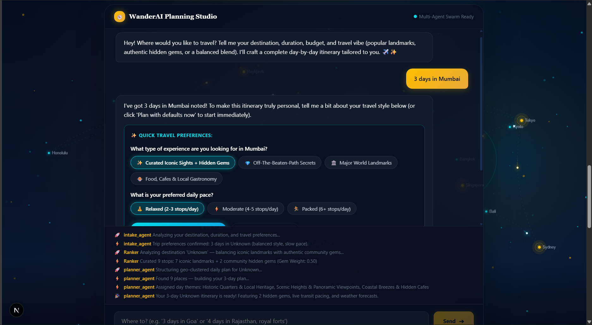

Autonomous Agents & Applications
Multi-agent graphs, local-first inference pipelines, and reasoning systems built for enterprise speed and privacy.

WanderAI — AI Travel Planner
Conversational multi-agent state machine crafting personalized day-by-day itineraries with live weather, hidden gem discovery, and Leaflet interactive maps.
- 3-Agent LangGraph State Machine (Intake, Ranker, Planner) with streaming SSE
- Hidden Gem Engine cross-referencing Reddit API + Tavily sentiment scoring
- K-means++ spatial POI clustering & OpenTripMap + Google Places enrichment
AI Research OS
Autonomous AI research assistant with arXiv discovery, hybrid PDF parsing, vision figure captioning, and literature survey generation.
- Docling hybrid layout parser + vision figure captioning (qwen2.5vl:3b)
- LangGraph 4-agent team with dual LLM router (Groq 70B & Ollama)
- Streaming SSE chat with paragraph-level clickable citation inspector
AI SQL Assistant
Local-first AI agent converting natural language into precise MySQL queries with zero cloud dependency.
- Tiered safety framework blocking destructive SQL commands
- Schema introspection & auto-query correction loop
- Full audit trail logging & Streamlit web interface
Museum Booking Chatbot
Conversational ticketing agent navigating national museum catalogs with stateful booking flows.
- LangGraph cyclic agent handling complex multi-turn dialog
- Fuzzy string matching & database connection pooling
- FastAPI backend paired with interactive Streamlit UI
Market Research Agent
Autonomous multi-agent research engine that decomposes questions, scrapes live data, and drafts PDF reports.
- 5 specialized agents: Planner, Search, Scraper, Verifier, Summarizer
- Hybrid model routing: Ollama 7B verifier + Groq 70B synthesizer
- ChromaDB vector store RAG & ReportLab executive PDF builder
CompanyLens — AI Scraper
Enterprise company enrichment pipeline with intelligent sitemap crawling and verified contact extraction.
- Fuzzy sitemap routing & Cloudflare anti-bot bypass chain
- Regex pre-harvesting with Gemini 2.5 Flash verification
- Glassmorphism dashboard with multi-step live status indicators